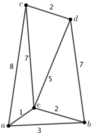

Dalam sebagian besar pengalaman kita mempelajari matematika, pembahasan berlangsung di \(\R^2\text{,}\) tempat kita mengukur jarak antara titik \((x_1,x_2)\) dan \((y_1,y_2)\) dengan jarak Euklides standar \(d_E\text{.}\) Dalam aktivitas pendahuluan, kita melihat bahwa fungsi \(d_T\) memenuhi banyak sifat yang sama dengan \(d_E\text{.}\) Sifat-sifat ini memungkinkan kita menggunakan \(d_E\) maupun \(d_T\) sebagai fungsi jarak. Setiap fungsi jarak kita sebut metrik, dan setiap ruang tempat suatu metrik didefinisikan disebut ruang metrik.
Definisi3.4.
Suatu metrik pada ruang \(X\) adalah fungsi \(d : X \times X \to \R^+ \cup \{0\}\) yang memenuhi sifat-sifat berikut:
\(d(x,y) \geq 0\) untuk setiap \(x,y \in X\text{,}\)
\(d(x,y) = 0\) jika dan hanya jika \(x = y\) di dalam \(X\text{,}\)
\(d(x,y) = d(y,x)\) untuk setiap \(x, y \in X\text{,}\) dan
\(d(x,y) \leq d(x,z) + d(z,y)\) untuk setiap \(x,y,z \in X\text{.}\)
Sifat 1 dan 2 suatu metrik menyatakan bahwa metrik tersebut definit positif, sedangkan sifat 3 menyatakan bahwa metrik tersebut simetris. Sifat 4 dalam definisi biasanya merupakan sifat metrik yang paling sulit diverifikasi dan disebut pertidaksamaan segitiga.
Definisi3.5.
Suatu ruang metrik adalah pasangan \((X,d)\text{,}\) dengan \(d\) suatu metrik pada ruang \(X\text{.}\)
Apabila metriknya jelas dari konteks, kita cukup menyebut \(X\) sebagai ruang metrik.
Kegiatan3.2.
Untuk setiap butir berikut, tentukan apakah \((X,d)\) merupakan ruang metrik. Jika \((X,d)\) merupakan ruang metrik, jelaskan alasannya. Jika \((X,d)\) bukan ruang metrik, tentukan sifat metrik mana yang dipenuhi oleh \(d\) dan mana yang tidak. Jika \((X,d)\) merupakan ruang metrik, berikan deskripsi geometris lingkaran satuan (himpunan semua titik di dalam \(X\) yang berjarak \(1\) dari unsur nol) di ruang tersebut.
Perlu diperhatikan bahwa tidak semua ruang metrik bersifat tak berhingga. Pada contoh berikut, kita membahas suatu metrik pada ruang berhingga.
Contoh3.6.
Misalkan \(X = \{a,b,c\}\) dan definisikan \(d: X \times X \to \R^+ \cup \{0\}\) dengan nilai-nilai pada Tabel 3.7.
Tabel3.7.Tabel nilai fungsi \(d\)
\(a\)
\(b\)
\(c\)
\(a\)
\(0\)
\(3\)
\(5\)
\(b\)
\(3\)
\(0\)
\(4\)
\(c\)
\(5\)
\(4\)
\(0\)
Menurut definisi, kita mempunyai \(d(x,y) \geq 0\) untuk setiap \(x,
y \in X\text{,}\) dengan \(d(x,y) = 0\) jika dan hanya jika \(x=y\text{.}\) Karena tabel tersebut simetris terhadap diagonalnya, kita dapat melihat bahwa \(d(x,y) = d(y,x)\) untuk setiap \(x,y \in X\text{.}\) Satu-satunya sifat yang masih perlu diverifikasi adalah pertidaksamaan segitiga. Jika \(d(x,y) = 0\text{,}\) maka
Contoh 3.6 menunjukkan bahwa himpunan berhingga pun dapat menjadi ruang metrik. Bahkan, kita dapat membentuk ruang metrik berhingga dengan mengambil sebarang subhimpunan berhingga \(S\) dari ruang metrik \((X,d)\text{,}\) lalu menggunakan pembatasan \(d\) pada \(S\) sebagai metrik. Contoh 3.6 mengilustrasikan hal ini dengan menetapkan \(a = (0,0)\text{,}\)\(b = (3,0)\text{,}\) dan \(c = (3,4)\) di dalam \(\R^2\text{.}\) Dengan demikian, \(d\) merupakan pembatasan metrik Euklides pada himpunan \(X\text{.}\) Cara lain untuk membangun ruang metrik berhingga adalah memulai dengan himpunan titik yang berhingga, kemudian membuat graf yang menggunakan titik-titik tersebut sebagai simpul. Buatlah sisi-sisi sedemikian sehingga graf tersebut terhubung (artinya, terdapat lintasan dari setiap simpul ke setiap simpul lainnya), lalu berikan bobot pada sisi-sisinya seperti yang diilustrasikan pada Gambar 3.8. Selanjutnya, kita mendefinisikan metrik \(d\) pada \(S\) dengan menetapkan \(d(x,y)\) sebagai panjang lintasan terpendek antara simpul \(x\) dan \(y\) di dalam graf. Sebagai contoh, \(d(b,c) = d(b,e) + d(e,c) = 9\) pada graf ini.

Gambar3.8.Graf untuk mendefinisikan suatu metrik.
Seperti metrik Euklides dan metrik taksi, butir (c) dalam Kegiatan 3.2 dapat diperluas ke \(\R^n\) sebagai berikut. Jika \(x = (x_1, x_2, \ldots,
x_n)\) dan \(y = (y_1, y_2, \ldots,
y_n)\) berada di dalam \(\R^n\text{,}\) maka jarak maksimum \(d_M(x,y)\) dari \(x\) ke \(y\) didefinisikan sebagai
Metrik \(d_M\) disebut metrik maksimum. Pada bagian berikutnya, kita membuktikan bahwa metrik Euklides memang merupakan suatu metrik. Pembuktian bahwa \(d_T\) dan \(d_M\) merupakan metrik diserahkan kepada Latihan 5 dan Latihan 6.